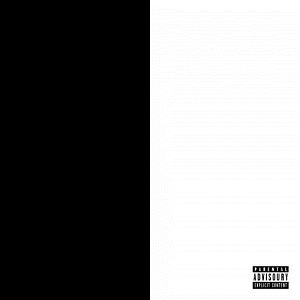
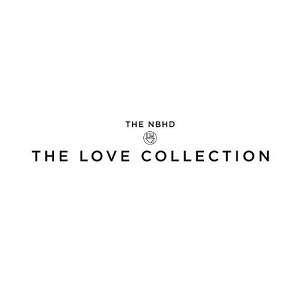
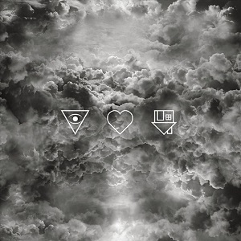
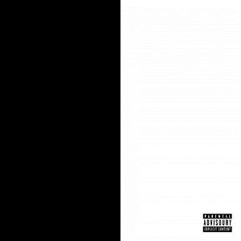
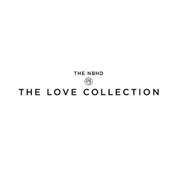
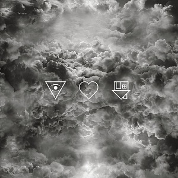

Alleyways (2013)
Biography
The Neighbourhood (THE NBHD) is an American rock band formed in Newbury Park, California in 2011. The band is composed of vocalist Jesse Rutherford, guitarists Jeremy Freedman and Zach Abels, bassist Mikey Margott, and drummer Brandon Alexander Fried. After releasing three EPs, I'm Sorry..., The Love Collection and Thank You, The Neighbourhood released their first full-length album, I Love You., on April 23, 2013, via Columbia Records. In November 2014, they released a mixtape titled #000000 & #FFFFFF. The band's second album, Wiped Out!, was released in October 2015.
In early 2012, The Neighbourhood came together to release "Female Robbery" and "Sweater Weather". In May 2012, the band unveiled a self-released free extended play titled I'm Sorry.... The debut EP was produced by Justyn Pilbrow. In December 2012, The Neighbourhood released their second EP, entitled Thank You. It includes the songs "Let It Go" and "A Little Death".
The band is known for their black-and-white imagery, as seen throughout their music, artwork, and videos.
| Upcoming | Location | Availability |
|---|---|---|
| Dec 03 | Plaza Condesa, Mexico City, Mexico | Sold Out |
| Dec 04 | Plaza Condesa, Mexico City, Mexico | Available |
| Dec 05 | Rio 70, Monterrey, Mexico | Sold Out |
| Dec 07 | Emo's, Austin, Texas | Available |
| Dec 08 | White Oak Music Hall, Houston, Texas | Available |
| Dec 09 | House of Blues, Dallas, Texas | Available |
| Dec 14 | El Rey Theater, Los Angeles, California | Available |
| Mar 17 | Lollapalooza Argentina, Buenos Aires, Argentina | Available |
| Mar 18 | Lollapalooza Chile, Santiago, Chile | Available |
| Mar 25 | Lollapalooza Brazil, Sao Paulo, Brazil | Available |
Discography
 




